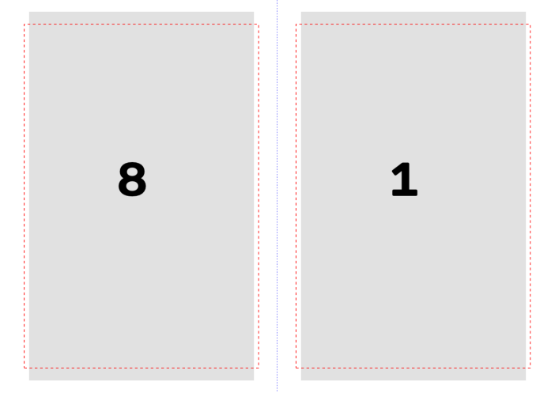
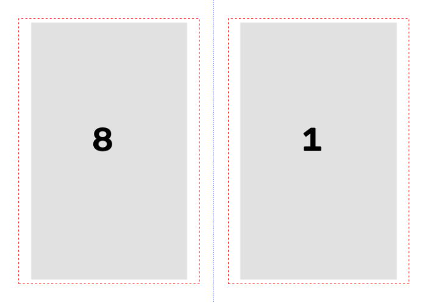
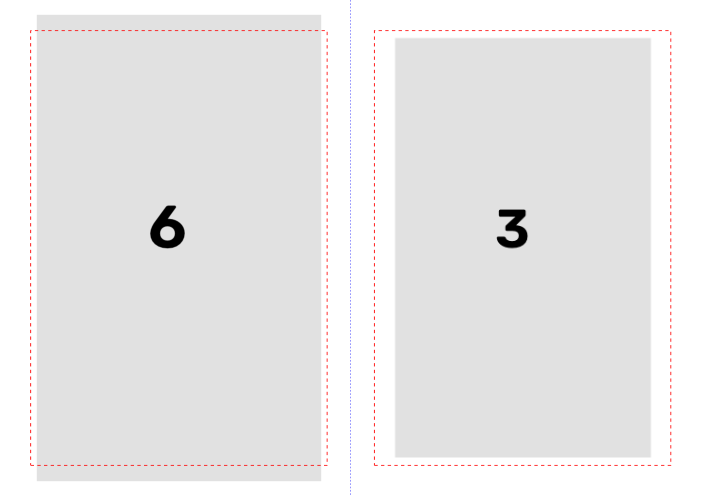

Pesquisa para a gerente, 19 e 20/10/2026. Ramo pesquisa-impressao-2026-10-19.
Pedido do Samuel (14/10): todas as opções da janela de imprimir do UPDF dentro do programa, mais o livreto
automático "como o embaralhador antigo (o primeiro que fizemos)". Texto dele em
relatorios/conferencia-samuel-2026-10-14/explicacao-da-impressao.md; decisões g10, g11 e g12 no Registro
do plano (13 e 14/10).
Ao longo do texto, [lido] quer dizer que eu li na fonte (código, foto, página da internet) e [dedução] quer dizer que é conclusão minha, ainda não conferida.
imposicao_cadernos.py, e a conta dele já está no programa
de hoje (core/cadernos.py), testada e com a conferência da dobra. Essa parte se aproveita inteira.| Opção (nome no UPDF) | O que faz | Como fazer no programa | Dificuldade |
|---|---|---|---|
| Livreto (frente e verso, encadernação esquerda) | Duas páginas por folha deitada, na ordem da dobra | Ordem: core/cadernos.py (já existe). Folha: show_pdf_page em cada metade de uma A4 deitada |
Média (a ordem está pronta; falta a folha A4, as margens e a escala) |
| Livreto em cadernos de N folhas | Vários cadernos em vez de um só (o UPDF e o Acrobat fazem um só) | Já existe (paginas_por_caderno, 8 a 40) |
Pronto |
| Livreto: Folhas de / até | Imprime só algumas folhas (ex.: refazer uma folha que enroscou) | Monta a ordem inteira e grava só os lados do intervalo | Fácil |
| Livreto: Frente e verso / só frente / só verso | Para impressora sem frente e verso automático | Grava só os lados ímpares ou só os pares | Fácil |
| Livreto: Encadernação esquerda / direita | Direita é para livro que abre ao contrário | Trocar a página da esquerda pela da direita em cada lado | Fácil |
| Ajustar | Aumenta ou diminui cada página até caber no papel | Conta da escala min(largura, altura) e show_pdf_page com proporção mantida |
Fácil |
| Tamanho real | 100%, sem escala; o que passar do papel é cortado | show_pdf_page com o tamanho da página em pontos, centrado, e clip |
Fácil (depende do DPI declarado do scan, ver Riscos) |
| Escala personalizada (%) | Escala fixa escolhida pelo usuário | Multiplica o tamanho real pela % | Fácil |
| Reduzir páginas muito grandes | Só diminui as páginas maiores que o papel; as menores ficam em 100% | escala = min(1, ajustar) |
Fácil |
| Escala só da esquerda / só da direita / das duas (pedido do Samuel) | Diminuir as páginas pares, as ímpares ou todas | Uma escala para cada lado da folha, valendo para o livro, com exceção por folha | Média (o difícil é a tela, não a conta) |
Margens 1,3 cm fora / 1 cm na costura (g11) |
Garantir a margem da encadernação clássica | Área de cada metade descontada das margens; a costura fica sempre no meio da A4 | Fácil |
| Aviso de margem abaixo de 1 cm | Avisar quando a tinta chegar perto demais da beirada | Caixa da tinta de cada página (4 números) e a conta da margem depois da escala | Média |
| Pôster | Divide uma página grande em várias folhas, com sobreposição para colar | Uma página nova por pedaço, show_pdf_page(..., clip=pedaço); marcas de corte com draw_line |
Média |
| Múltiplo | Várias páginas numa folha (2, 4, 6, 9, 16), em grade | Grade de células, show_pdf_page em cada uma; moldura com draw_rect |
Fácil |
| Tamanho do papel (A4, Carta, Ofício...) | Muda a folha de saída | Tabela de tamanhos em cm (a do UPDF, ver seção 2) | Fácil |
| Orientação Retrato / Paisagem | Folha em pé ou deitada | Trocar largura e altura da folha | Fácil |
| Rotação automática | Gira a página que está "deitada" num papel "em pé" (e o contrário) | show_pdf_page(..., rotate=90) quando a orientação não bate |
Fácil |
| Centralizar automático | Centra a página no papel; desligado, ela fica no canto | Posição do retângulo | Fácil |
| Escala de cinza | Tira a cor | Melhor na hora de gravar a página (o programa já tem a imagem na mão); depois só refazendo a imagem | Fácil se for na gravação |
| Imprimir como imagem | Manda a folha como uma foto inteira, não como desenho do PDF | As páginas do programa já são imagens. "Achatar" a folha inteira é possível, mas deixa o arquivo maior e mais lento | Fácil, mas pouco útil (ver seção 3) |
| Reverter páginas | Imprime da última para a primeira | Inverter a ordem das folhas, sem separar frente e verso de cada uma | Fácil, com teste na impressora |
| Intervalo de páginas / Todas | Imprime só parte do livro | Escolher as páginas antes de montar | Fácil |
| Cópias / Agrupar, impressora, Predefinição | Coisas da impressora | Só se o programa imprimir direto (PySide6 QPrinter: cópias, agrupar, frente e verso pela borda curta) |
Média |
A folha muito maior (g9) |
Tabela dobrável | Quatro caminhos na seção 6 | Média |
Onde está [lido]: é o imposicao_cadernos.py, feito no chat que deu origem ao projeto, guardado inteiro em
historico/genesis-conversa-imposicao-cadernos.md (linhas 80 a 620). Não achei o arquivo solto no disco. Procurei
em D:\programas, velhos/, EditorImpressao-arquivos, Área de Trabalho, Downloads e Documentos. O git
começa no programa novo (94d3459); os ramos antigos não têm nada antes disso.
Como ele montava o caderno [lido]:
i (contando do 0)
leva na frente [N − 2i] [1 + 2i] e no verso [2 + 2i] [N − 1 − 2i]. Exemplo do próprio chat, 20 páginas:
folha 1 = 20|1 e 2|19; folha 5 (miolo) = 12|9 e 10|11. Os cadernos seguem em blocos de N páginas. O que
passa do fim vira página em branco no fim do último caderno, que é sempre do tamanho cheio. O arquivo saía
só com as páginas na nova ordem, e o Kaique tinha de imprimir "2 por folha".criar_pagina_dupla da primeira versão já fazia essa conta). Teste no chat: "232 páginas → 120 folhas
landscape". Ele dizia para imprimir em "Ajustar" ou "Tamanho real", frente e verso pela borda curta.O que existe hoje no programa [lido]: core/cadernos.py tem a mesma conta (ordem_do_caderno,
montar_ordem), mais duas coisas que o antigo não tinha: conferir_sequencia (simula a dobra e confere que a
leitura sai 1, 2, 3…, sem página faltando nem repetida) e instrucoes_de_impressao. Tem testes
(tests/test_cadernos.py). A caixa "Montar cadernos para impressão" fica em ui/tela_opcoes.py, com 8 a 40 páginas
por caderno (padrão 20), e há um "caminho rápido, só cadernos" que não refaz as imagens (core/pipeline.py).
Diferença importante [lido]: o impor_pdf de hoje faz a folha com o dobro da largura da maior página e
põe as páginas em 100%, sem papel A4, sem margem e sem escala. As provas antigas em
EditorImpressao-arquivos\testes-cadernos-gradus-primus\ saem com 29,8 x 21,0 cm porque a página do Gradus
já é quase A5. Num livro de página maior (Opus Majus, 14,6 x 23,5 cm), a folha sairia com 29,2 x 23,5 cm, que
não é A4. Quem acerta o tamanho hoje é a janela do UPDF ("Escala personalizada" de 75% e 83% nas fotos).
Dá para reaproveitar? [dedução] Sim. A ordem e a conferência ficam como estão. O que muda é só a parte de pôr
cada página na folha (impor_pdf / _colocar): passa a receber o papel, as margens e a escala de cada lado.
A conta do "reduzir e centrar na metade" da segunda versão é a mesma do "Ajustar" da seção 3.
O defeito herdado [lido no código, conferido rodando]: com 23 páginas em cadernos de 20, montar_ordem faz
dois cadernos de 20: o segundo leva as páginas 21 a 23 e 17 páginas em branco, com as folhas 3, 4 e 5 do
caderno inteiramente vazias (a conferência diz "sobram 17 páginas em branco no fim do último caderno"). Num
livro de 250 páginas, o último caderno (241 a 250) sai com metade de cada folha em branco. O antigo fazia o
mesmo. Ver a pergunta 4 da seção 9.
[lido nas fotos]
[dedução]
Fonte das definições: a documentação da Adobe para as opções iguais. O guia do UPDF só lista os nomes, e a explicação que ele dá da escala de cinza ("imprimir as cores opostas de fundo e frente") parece engano do texto; não a uso.
Tamanho (aba). [lido, Adobe] Ajustar "reduz ou aumenta cada página até caber na área imprimível do papel";
Tamanho real "imprime sem escala; o que não cabe é cortado"; Reduzir páginas muito grandes "diminui as páginas
grandes até caber, mas não aumenta as pequenas"; Escala personalizada é a %. No PyMuPDF [lido, documentação
do show_pdf_page]: cria-se uma página do tamanho do papel e põe-se a página do livro com
folha.show_pdf_page(retângulo, livro, número). A página entra como desenho do PDF, sem refazer a imagem: os
pixels do livro ficam intactos e a conta é rápida. O retângulo é a única coisa que muda entre as quatro opções:
f = min(largura_área / largura_pág, altura_área / altura_pág);f = 1, e o clip corta o que passar;f = min(1, ajustar);f = %/100.A "área imprimível" do UPDF é a da impressora (os ~3 mm que o Samuel citou). No programa, a área é o papel menos esses 3 mm, ou o papel menos as margens de 1,3/1 cm (ver a pergunta 2).
Rotação automática e Centralizar automático. [lido, Adobe] a rotação automática gira cada página para o
melhor encaixe. [dedução] Desligada a centralização, a página encosta num canto (não achei qual na
documentação). No PyMuPDF: show_pdf_page(..., rotate=90) e a posição do retângulo.
Múltiplo. [lido, PDF Reader Pro e Adobe] várias páginas por folha ("n-up": 2, 4, 6, 9, 16 ou sob medida), em
ordem horizontal ou vertical (e as duas invertidas), com moldura opcional. No PyMuPDF: divide-se a folha em
grade e cada célula recebe um show_pdf_page. Para o livro, o uso real é pouco [dedução]: "2 por folha" sem
embaralhar é o que a primeira versão do embaralhador pedia ao Kaique, e o Livreto já faz melhor.
Pôster. [lido, Adobe/docuslice] divide uma página grande em várias folhas. "Escala do bloco" (% do tamanho),
"Sobreposição" (faixa repetida na beirada de cada pedaço para colar; sugestão de ~1 cm), "Marcas de corte",
"Rótulos" (nome do arquivo e número do pedaço) e "Só páginas grandes" (as que cabem num papel saem inteiras).
No PyMuPDF: para cada pedaço, uma página nova e show_pdf_page(folha.rect, livro, n, clip=pedaço); as marcas
com draw_line e o rótulo com insert_text. Serve para a tabela dobrável (seção 6).
Livreto (aba). [lido, Adobe] "Subconjunto: os dois lados / só frente / só verso" (o UPDF chama de "Ordem de páginas: Frente e verso"); "Folhas de / até"; "Encadernação: Esquerda, Direita, Esquerda alta, Direita alta". O Acrobat trata o PDF inteiro como um caderno só e completa com brancos no fim até múltiplo de 4 [lido, Adobe e o chat de origem: "o Acrobat não tem nativamente a opção de dividir em múltiplos cadernos"]. O programa já faz melhor, com cadernos de N páginas. A encadernação "alta" (dobra em cima) não serve para estes livros [dedução]. "Direita" é só trocar os lados.
Escala de cinza. Tira a cor. [dedução] As páginas do programa são imagens. O jeito barato é converter na hora
de gravar cada página (o EscritorPDF já recebe a imagem); fazer isso depois obriga a abrir e refazer cada
imagem. No filtro "Preto e branco" já é cinza (1 bit), então a opção só muda algo no "Original", "Melhorar" e
"Mágico pro".
Imprimir como imagem. [lido, guia UPDF] "manda o pedido como uma imagem simples em vez do documento".
Serve quando a impressora desenha mal o PDF (fontes, transparências). [dedução] O PDF do programa já é feito de
imagens, sem fonte nenhuma. "Achatar" cada folha numa imagem só (get_pixmap a 300 ou 600 DPI e gravar de
novo) é possível, mas deixa o arquivo maior e a gravação mais lenta. No Preto e branco pode até amaciar a letra,
se o DPI ficar abaixo do original. Recomendo não ter de fábrica e perguntar por que estava marcada (pergunta 6).
Reverter páginas. [lido, guia UPDF] imprime da última para a primeira, para impressora que solta a folha virada para cima. [dedução] No livreto frente e verso não se pode inverter página a página: separaria a frente do verso de cada folha. Tem de inverter a ordem das folhas, mantendo o par frente/verso. Precisa de um teste na Epson antes de entregar.
Intervalo de páginas. Simples no arquivo. [dedução] No livreto há duas leituras: (a) um trecho do livro vira o seu próprio livreto (o Acrobat faz assim); (b) "Folhas de/até" reimprime folhas já montadas. As duas servem. A (b) é a que salva papel quando uma folha enrosca.
Tamanhos de papel e orientação. Uma tabela fixa (a da foto 3) e a troca de largura com altura. O
core/folha.py já tem A4, A5 e Carta. No livreto, cada metade do papel deitado é uma página.
Cópias, Agrupar, impressora, Predefinição. Não existem num arquivo PDF. Dois caminhos [dedução]:
QtPrintSupport, com escolha de
impressora, cópias, agrupar e frente e verso pela borda curta (QPrinter.DuplexShortSide) [lido: o módulo
importa neste PC e lista as impressoras].O caminho B rende cada folha como imagem para a impressora (uma por vez, sem pesar na memória). Recomendo começar pelo A e deixar o B como segundo passo (pergunta 5).
A ordem é a do core/cadernos.py (seção 1). Exemplo com cadernos de 8 páginas (2 folhas), conferido rodando:
| Folha | Frente (esquerda · direita) | Verso (esquerda · direita) |
|---|---|---|
| 1 (de fora) | 8 · 1 | 2 · 7 |
| 2 (miolo) | 6 · 3 | 4 · 5 |
O caderno seguinte começa na página 9, com a mesma conta somando 8. Com 20 páginas por caderno (o padrão), a folha 1 é 20·1 / 2·19 e a do miolo é 12·9 / 10·11, igual ao chat de origem.
A costura fica sempre no meio da A4 [lido na conta, conferido]: a página da esquerda de cada lado é sempre par e a da direita sempre ímpar. Isso bate com a regra do Samuel: "página par → direita, página ímpar → esquerda" (par tem a costura à direita, ímpar à esquerda). Logo, a margem de costura é sempre a do meio da folha, e a de fora é sempre a da beirada do papel. Não depende de qual página caiu onde.
Quando o número de páginas não fecha o caderno (opções) [dedução, para o Samuel escolher]:
Em todos os casos, os brancos podem ir no fim do livro (o usual, e o que o Acrobat faz) ou antes da última folha
(guarda). A conferência da dobra (conferir_sequencia) continua valendo e precisa de um teste para cada caso.
Instrução de imprimir (já existe): frente e verso virando pela borda curta; separar em grupos de N÷4 folhas; dobrar. A Epson WF-C5890 tem frente e verso automático [lido, fichas de revenda; não achei a ficha da Epson].
As medidas [lido no plano]: contadas na A5; 1 cm a partir de onde a impressora imprime = 1,3 cm da beirada
do papel em cima, embaixo e do lado de fora; 1 cm na costura (g11). Numa A4 deitada, cada metade tem
14,85 x 21,0 cm, e a área garantida fica com 12,55 x 18,4 cm.
A escala por lado [lido no plano, g12]: "Em todas, e dá para mudar uma folha só". [dedução] "Lado esquerdo"
= as páginas que caem à esquerda da folha (as pares); "lado direito" = as ímpares. Faz sentido quando o scan das
páginas pares e das ímpares saiu de tamanhos diferentes. Na prova: uma escala para a esquerda, outra para a
direita, e uma lista de exceções {folha: (esquerda, direita)}.
Onde fica a página reduzida [dedução]: na prova, centrada na sua metade. Assim a margem da costura e a de fora crescem juntas, ao contrário do que acontece hoje ao reduzir a folha inteira no UPDF (seção 2). Outra opção seria encostar na costura e deixar a sobra toda para fora. Fica para o Samuel.
O aviso [dedução, testado na prova]: o programa guarda, para cada página, o retângulo onde há tinta (4 números). Na hora de montar, calcula onde esse retângulo cai na folha e mede as quatro distâncias até a beirada da metade. Avisa se fora, cima ou baixo der menos de 1,3 cm, ou a costura menos de 1,0 cm, e diz quanto falta e que escala resolve. O melhor é medir a tinta durante o processamento, quando a imagem já está na memória, e não reler o livro na hora de imprimir (seção 7).
A prova (rascunho, fora do programa; script em prova_livreto.py.txt): livro falso de 23 páginas de
14,6 x 23,5 cm (o tamanho do Opus Majus) com a tinta a 0,4 cm da beirada, como depois de um corte justo.
| Montagem | Páginas com aviso |
|---|---|
| Ajustar na metade da A4 (só tirando os 3 mm da impressora) | 23 de 23 (cima e baixo com 0,67 cm) |
| A mesma, com escala 95% | 23 (1,16 cm, ainda abaixo de 1,3) |
| A mesma, com escala 90% / 85% / 80% | 0 |
| Ajustar dentro das margens (1,3 / 1,0 cm) | 0 |
| Direita 90%, esquerda 100%, folha 1 com exceção de 80% | 10 (só as páginas da esquerda) |
A linha vermelha tracejada é a margem mínima e a azul é a dobra. As duas aparecem só na prévia, nunca no arquivo de imprimir.



g9-folha-maior-impressao)Medidas [lido, resumo de 14/10]: tabela do Opus Majus 20,8 x 17,6 cm; página comum 14,6 x 23,5 cm. Contas minhas com as áreas da seção 5:
| Opção | Como se faz | Tamanho que sai |
|---|---|---|
| Ajustar (gira de pé e reduz até caber na A5) | rotate=90 e a conta do Ajustar na vaga dela no caderno |
83% dentro da A5 menos 3 mm; 71% dentro das margens (a página comum fica com 87% e 78%) |
| Tamanho real numa A4 à parte | Uma página A4 deitada a 100%, num arquivo separado ou no fim; na vaga dela no caderno, uma página em branco ou a tabela reduzida | 100% (cabe: 20,8 x 17,6 numa A4 deitada, mesmo com 1,3 cm de margem). Dobra-se e cola-se à mão |
| Pôster | Pedaços com sobreposição, para colar | Só faz sentido para tabela maior que uma A4; esta não precisa |
| Dividir em duas | Metade esquerda numa página, metade direita na seguinte (clip em cada metade) |
100%: cada metade (10,4 x 17,6) cabe numa A5 até dentro das margens; a tabela fica aberta em duas páginas, cortada pela dobra |
(A página de escolhas fala em ~73% e ~81%. A diferença vem da área usada na conta; os números acima usam as
margens de g11.)
Cuidado com a paridade [dedução]: tirar a tabela do caderno ou dividi-la em duas muda o número de páginas. Se mudar em número ímpar, todas as páginas seguintes trocam de lado (a ímpar vai para a esquerda, a costura vai para o lado errado). Para não acontecer: ao tirar, tira-se também o verso em branco dela (se existir) ou fica uma página em branco na vaga; ao dividir, a primeira metade tem de cair numa página par (lado esquerdo do livro aberto). Se não cair, o programa põe uma branca antes. Isso tem de ter teste.
EscritorPDF também só grava no fim). A regra
"uma página por vez" continua valendo: nenhuma página aberta em pixels fica guardada. Um livro de 1000 páginas
e 600 MB deve passar de 1 GB de pico. O notebook do Kaique (32 GB) aguenta, mas tem de ser medido na Fase 5.show_pdf_page não refaz imagem nenhuma, então montar é rápido. O que pesa é medir
a tinta para o aviso relendo o livro (na prova, a 30 DPI). Em 1000 páginas, isso pode levar dezenas de segundos.
Por isso a recomendação de medir durante o processamento. "Escala de cinza" e "Imprimir como imagem" feitas
depois obrigam a refazer cada imagem (lento); a cinza deve ir na gravação.EscritorPDF.escrever_imagem),
então não há fonte para dar problema. O "caminho rápido, só cadernos" copia o PDF original, e o show_pdf_page
mantém o texto e as fontes dele. A escala não estraga pixel no arquivo: quem reduz na hora é a impressora.Nada novo. PyMuPDF (AGPL; liberado pela decisão de 17/09) e PySide6 com QtPrintSupport (LGPL), os dois já no
projeto. O embaralhador antigo usava PyPDF2 (BSD), que não é preciso trazer: a mesma conta já está no
core/cadernos.py.
Em aberto, não deu para confirmar:
g9-folha-maior-impressao continua aberta na página de escolhas (seção 6 tem as contas).Perguntas (texto para colar):
historico/genesis-conversa-imposicao-cadernos.md; core/cadernos.py, core/pdf_io.py,
core/folha.py, core/pipeline.py, ui/tela_opcoes.py, ui/tela_final.py;
relatorios/conferencia-samuel-2026-10-14/ (texto e cinco fotos); docs/plano/PLANO-DEFINITIVO.md..venv): documentação de Page.show_pdf_page (parâmetros clip, rotate, keep_proportion).Editor de Impressão · gerado em 20/10/2026 às 04:40